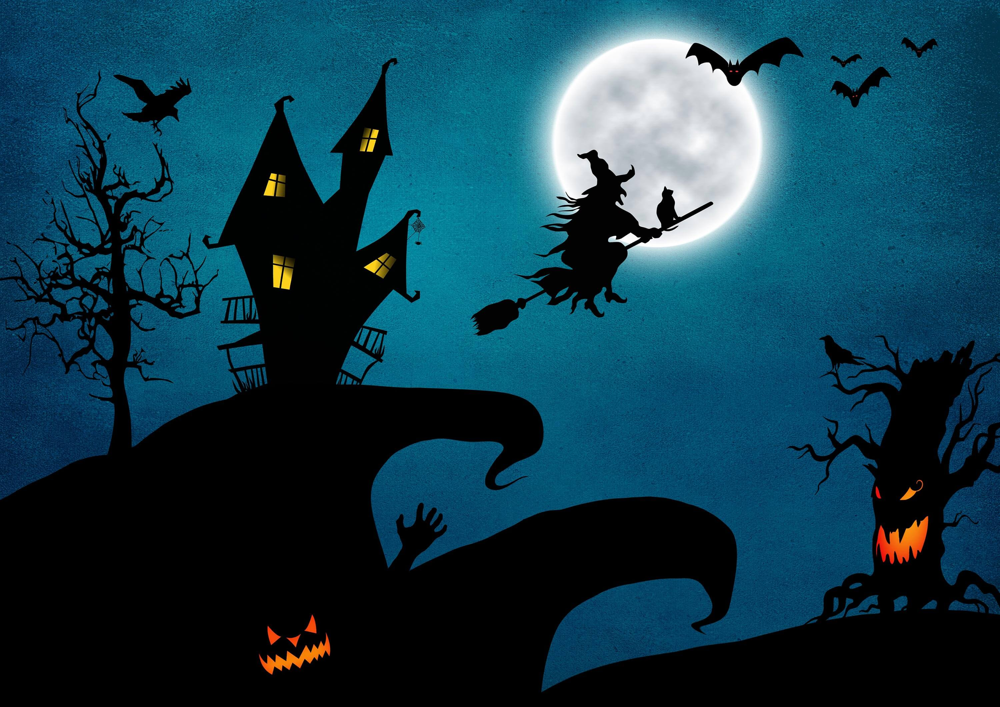
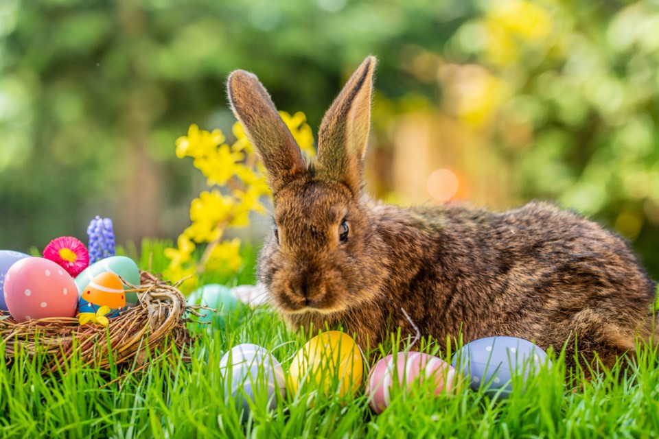
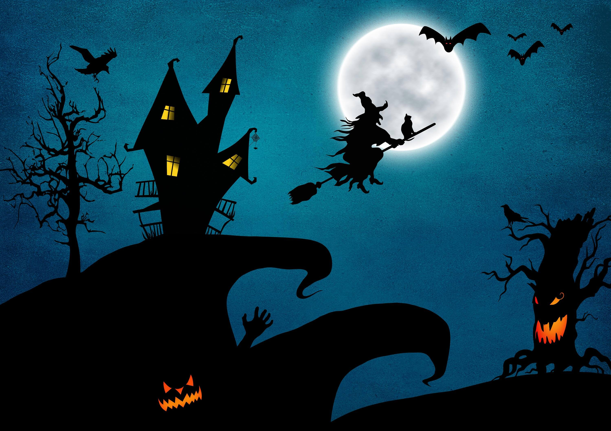
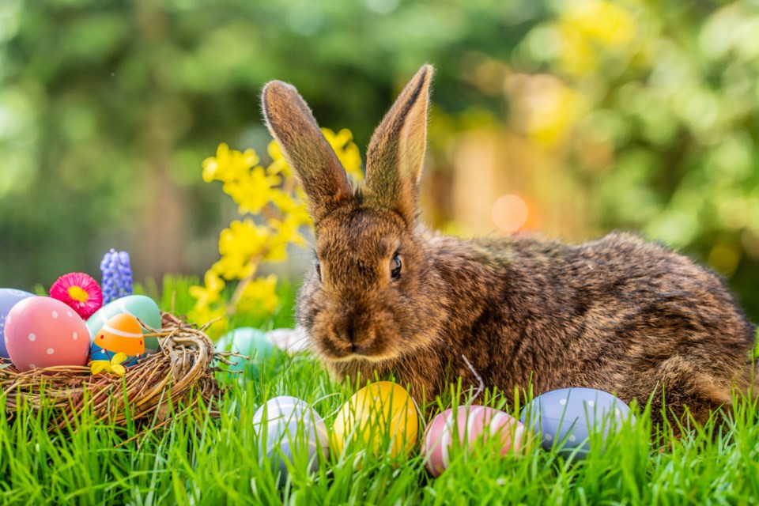
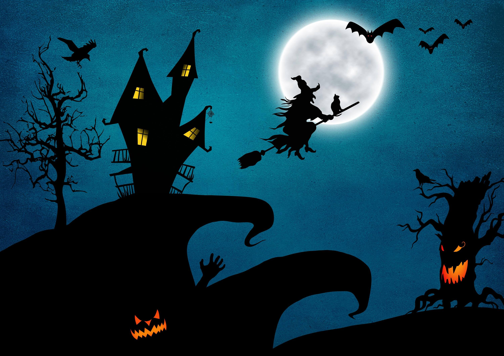
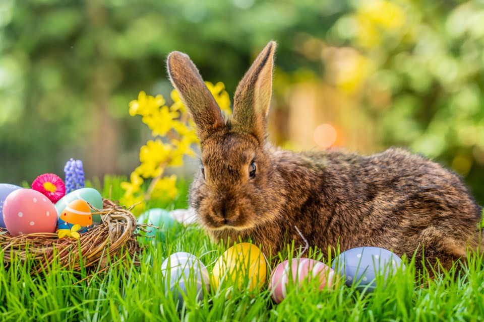
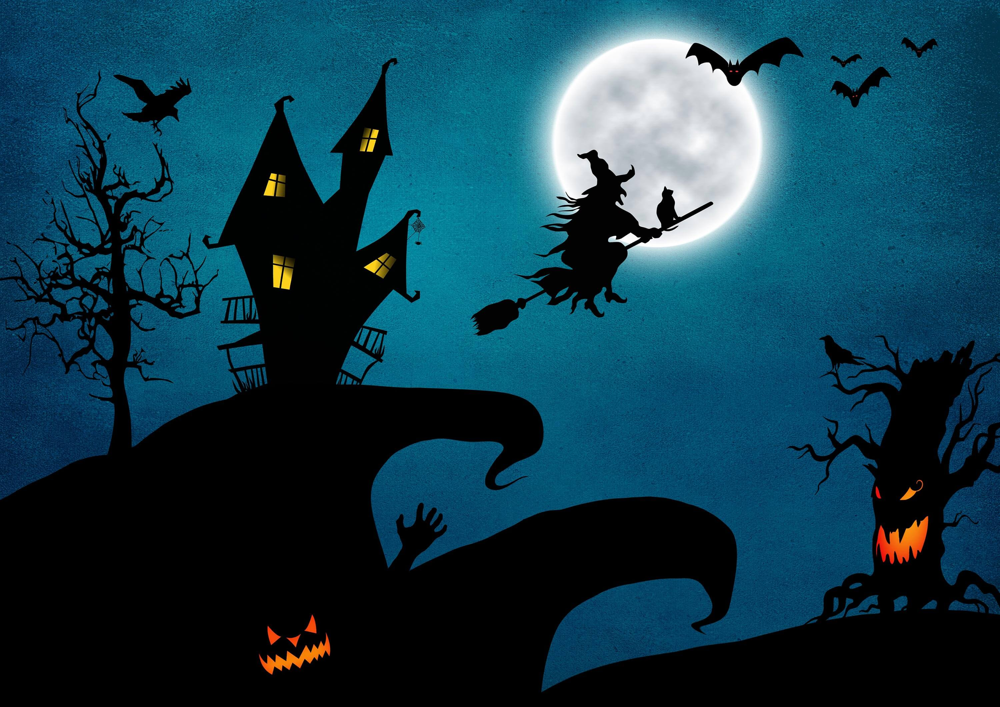
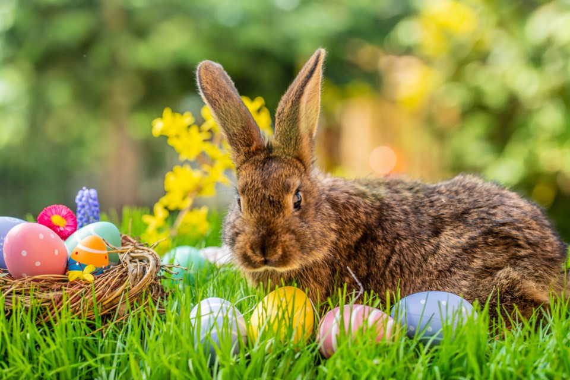

Most Favorite Holidays
- Christmas
- Halloween
- Easter
- New Years
- St. Patrick's Day
 




 



Christmas is my most favorite holiday because I meet with my entire family every year. We all have fun, eat, and enjoy ourselves all together at home. Halloween also brings my relatives together whenever we all go trick-or-treating from house to house. It is a fun experience during autumn times. The best day of April is Easter day, and I may be getting older, but I still help my cousins search for easter eggs. Another family gathering holiday is New Years'. One of the times to ever have, you get to view fireworks glow the entire sky, and suddenly gleam down to the ground. Last but not least, St. Patrick's Day, an Irish holiday, but the reason why I celebrate Patrick's Day is that I am still searching for a four-leaf clover! Well, that is my top 5 favorite holidays.
Back to the Top